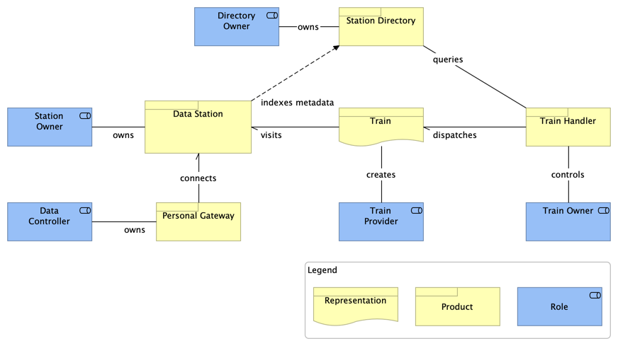

1 Introduction
The FAIR Data Train (FDT) is a FAIR-based platform framework that aims at guarateeing a specific level of interoperability among its participant elements/components. It defines a set of application types and their expected behaviors to support the findability, accessibility, interoperability and reusability of data following the FAIR principles [FAIR-principles]. The FDT follows the analogy of a train system where we have two main elements, stations and trains. FAIR Stations are responsible of making data (or other types of digital objects) available and provide metadata about themselves (the Stations) and their content (data or other types of digital objects). FAIR Trains represent analysis/processing algorithms that are sent to FAIR Stations to process and/or analyze data. Additionally, a Station Directory is a special kind of FAIR Station which indexes the metadata of other stations and provide search capabilities. Therefore, Station Directories can be consulted to verify which station provides which data.
In this document, we consider data not only the content of artefacts such as databases, tables, graphs, etc., but also other types of digital objects such as controlled vocabularies, ontologies, models, etc. From now on, unless otherwise explained we use the terms data and other types of digital objects interchangeably. The FAIR Data Train architecture defines a number of key capabilities:
- Provisioning of metadata to describe digital objects;
- A common representation format [RDF] to express the metadata in a machine-actionable manner;
- A common approach to inform clients on how to navigate through the metadata structure;
- A common representation format [SHACL] for the metadata schemas;
- A common way of describing how data sources support interactions with their content in terms of metadata properties of the station;
- A common way to represent how client applications can interact with data, i.e., interfaces and protocols for the station to accept incoming trains
The main goal of the FDT general architecture is to define a set of behaviours, interfaces and protocols to improve interoperability among data sources and data processing services. To fulfill this goal, this document contains a set of specifications to help developers to build new applications or to extend the functionality of their existing applications in a way that these applications can also be part of the FAIR Data Train ecosystem. The envisioned scenario is the one with a multitude of trains, stations and client applications independently created and able to interact with one another because they all follow the same base guidelines (interfaces, protocols, representation formats, etc.).
1.1 Purpose
The purpose of this document is to present the general architecture of the FAIR Data Train. This document includes requirements, architecture, design principles and design of the FDT. This architecture is primarily intended to be a reference for developers willing to add the FDT functionality into their existing applications or develop their own FAIR Data Train implementation. In order to better understand this specification, a knowledge of RDF, LDP, SHACL and REST APIs is required.
1.2 Document conventions
Conformance requirements are expressed with a combination of descriptive assertions and RFC 2119 terminology. The key words "MUST", "MUST NOT", "REQUIRED", "SHALL", "SHALL NOT", "SHOULD", "SHOULD NOT", "RECOMMENDED", "MAY", and "OPTIONAL" in the normative parts of this document are to be interpreted as described in RFC 2119. However, for readability, these words do not appear in all uppercase letters in this specification.
All of the text of this specification is normative except sections explicitly marked as non-normative, examples, and notes. [RFC2119]
2 Main components
As depicted in Figure 2.1, the main elements (applications, roles and interaction mechanisms) of the FAIR Data Train are:
- FAIR Data Station: application type responsible for making data and their related metadata available to users under the accessibility conditions determined by applicable regulations and the related
Data Controllers. The Data Station is also able to register itself in a Station Directory to have its metadata indexed by that directory; - Personal Gateway: application responsible to intermediate the communication between
Data StationsandData Controllers. TheData Controllerexercises its/his/her control over the data available in differentData Stationsthrough thePersonal Gateway - Station Directory: application responsible to index metadata from the reachable
Data Stationsand allow users (client applications) to search for data available on those stations. - Train: represents the way data consumers interact with the data available on
Data Stations. TheTrainscan be of different types, such as API calls, container images, queries, messages, etc.Trainscan only visitData Stationsthat support the same type of interaction, e.g., a SQL query train requires a station that supports this type of query; - Train Handler: application that represents client applications that can interact with the
Station Directoryto discover the existance and location of data andData Stationsto actually work with the available data; - Station Owner: role played by stakeholders that are responsible for managing and running
Data Stations. Since the Station Directory is a specialisation of Data Station, the same role of Station Owner applies to the Station Directory; - Data Controller: role played by individuals or organizations that have controlling rights over data;
- Train Owner: role played by individuals or organizations responsible for sending
TrainstoData Stations; - Train Provider: role played by individuals or organizations that create
Trainsto be used by themselves or others. When aTrain Provideruses its own createdTrainand sends it to access data inData Stations, it is, at this moment, playing also the role ofTrain Owner.

2.1 FAIR Data Station
Since the purpose of the FAIR Data Train architecture is to define a set of desired behaviours that applications should expose and support, the definition of the FAIR Data Station (FDS) should specify the station's interface. For simplicity, we first start by dividing the FDS API in following three major groups, namely, Metadata Interface, Station Interface and Content Interaction Interface, as depicted in Figure 2.2. Each one of these interface groups are intended to expose the interfaces of a number of services available at the FDS.
In this Figure 2.2, it is also made explicit that the interaction with the data happens through the FDS' Interaction Component, which connects with the actual Data Storage component.
2.1.1 Metadata Interface
The Metadata Interface complies with the FAIR Data Point specifications.
TODO: add details from the FDP specs.
2.1.2 Station Interface
The Station Interface is repos